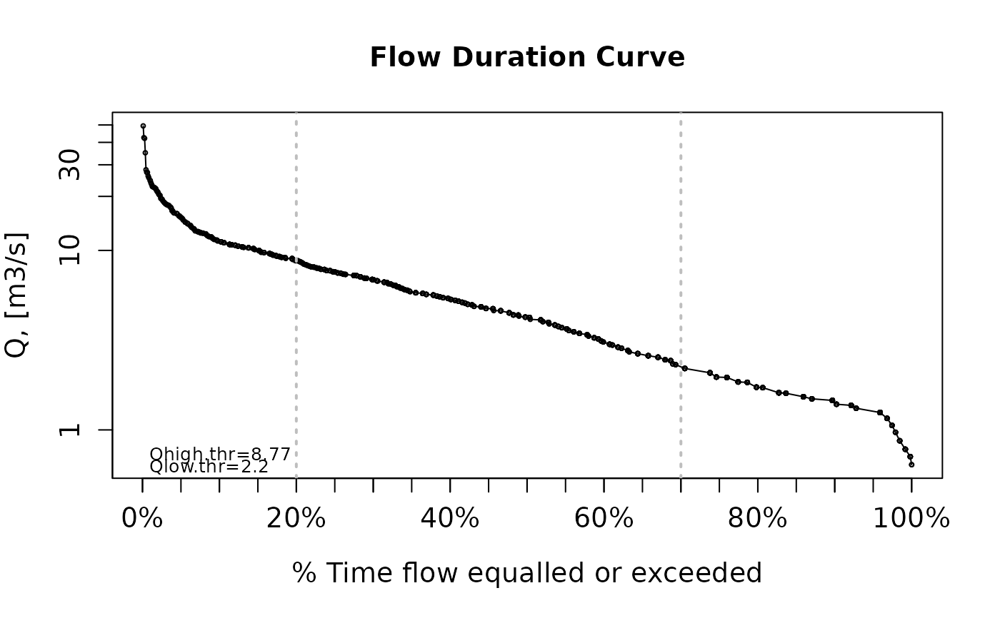

Flow Duration Curve
fdc.RdComputes and plots the Flow Duration Curve (FDC) corresponding to a given time series of streamflow discharges.
Usage
fdc(x, ...)
# Default S3 method
fdc(x,lQ.thr=0.7,hQ.thr=0.2, plot=TRUE, log="y",
main="Flow Duration Curve", xlab="% Time flow equalled or exceeded",
ylab="Q, [m3/s]", ylim, yat=c(0.01, 0.1, 1), xat=c(0.01, 0.025, 0.05), col="black",
pch=1, lwd=1, lty=1, cex=0.4, cex.axis=1.2, cex.lab=1.2, leg.txt=NULL, leg.cex=1,
leg.pos="topright", thr.pos="bottomleft",
verbose= TRUE, thr.shw=TRUE, new=TRUE, ...)
# S3 method for class 'matrix'
fdc(x, lQ.thr=0.7, hQ.thr=0.2, plot=TRUE, log="y",
main= "Flow Duration Curve", xlab="% Time flow equalled or exceeded",
ylab="Q, [m3/s]", ylim, yat=c(0.01, 0.1, 1), xat=c(0.01, 0.025, 0.05),
col=palette("default")[1:ncol(x)], pch=1:ncol(x), lwd=rep(1, ncol(x)),
lty=1:ncol(x), cex=0.4, cex.axis=1.2, cex.lab=1.2, leg.txt=NULL,
leg.cex=1, leg.pos="topright", thr.pos="bottomleft",
verbose=TRUE, thr.shw=TRUE, new=TRUE, ...)
# S3 method for class 'data.frame'
fdc(x, lQ.thr=0.7, hQ.thr=0.2, plot=TRUE, log="y",
main= "Flow Duration Curve", xlab="% Time flow equalled or exceeded",
ylab="Q, [m3/s]", ylim, yat=c(0.01, 0.1, 1), xat=c(0.01, 0.025, 0.05),
col=palette("default")[1:ncol(x)], pch=1:ncol(x), lwd=rep(1, ncol(x)),
lty=1:ncol(x), cex=0.4, cex.axis=1.2, cex.lab=1.2, leg.txt=NULL,
leg.cex=1, leg.pos="topright", thr.pos="bottomleft",
verbose=TRUE, thr.shw=TRUE, new=TRUE, ...)
# S3 method for class 'zoo'
fdc(x, lQ.thr=0.7, hQ.thr=0.2, plot=TRUE, log="y",
main= "Flow Duration Curve", xlab="% Time flow equalled or exceeded",
ylab="Q, [m3/s]", ylim, yat=c(0.01, 0.1, 1), xat=c(0.01, 0.025, 0.05),
col=palette("default")[1:NCOL(x)], pch=1:NCOL(x), lwd=rep(1, NCOL(x)),
lty=1:NCOL(x), cex=0.4, cex.axis=1.2, cex.lab=1.2, leg.txt=NULL,
leg.cex=1, leg.pos="topright", thr.pos="bottomleft",
verbose=TRUE, thr.shw=TRUE, new=TRUE, ...)Arguments
- x
numeric, zoo, data.frame or matrix object with the observed streamflows for which the flow duration curve have to be computed.
Measurements at several gauging stations can be stored in a data.frame of matrix object, and in that case, each column ofxrepresent the time series measured in each gauging station, and the column names ofxhave to correspond to the ID of each station (starting by a letter). Whenxis a matrix or data.frame, the flow duration curve is computed for each column.- lQ.thr
numeric, low-flow separation threshold. If this value is different from NA, a vertical line is drawn in this value, and all the values to the right of it should be deemed as low flows. Default value is 0.7.
- hQ.thr
numeric, high-flow separation threshold. If this value is different from NA, a vertical line is drawn in this value, and all the values to the left of it should br deemed as high flows. Default value is 0.2.
- plot
logical. Indicates if the flow duration curve should be plotted or not. Default value is TRUE.
- log
character, indicates which axis has to be plotted with a logarithmic scale. Default value is y
- main
- xlab
A title for the x axis. See
plot.- ylab
A title for the y axis. See
plot.- ylim
The y limits of the plot. See
plot.default.- yat
Only used when
log="y".
numeric, with points at which tick-marks will try to be drawn in the Y axis, in addition to the defaults computed by R. See theatargument inAxis.- xat
Only used when
log="x".
numeric, with points at which tick-marks will try to be drawn in the x axis, in addition to the defaults computed by R. See theatargument inAxis.- col
The colors to be used for lines and points. Multiple colors can be specified so that each point can be given its own color. If there are fewer colors than points they are recycled in the standard fashion. Lines will all be plotted in the first colour specified. See
plot.default.- pch
A vector of plotting characters or symbols: see
points. Seeplot.default.- lwd
The line width, see
par. Seeplot.default.- lty
The line type, see
par. Seeplot.default.- cex
See
plot.default. A numerical vector giving the amount by which plotting characters and symbols should be scaled relative to the default.
This works as a multiple ofpar("cex"). 'NULL' and 'NA' are equivalent to '1.0'. Note that this does not affect annotation- cex.axis
magnification of axis annotation relative to 'cex'.
- cex.lab
Magnification to be used for x and y labels relative to the current setting of 'cex'. See '?par'.
- leg.txt
vector with the names that have to be used for each column of
x.- leg.cex
numeric, indicating the character expansion factor for the legend, *relative* to current
par("cex"). Default value = 1- leg.pos
keyword to be used to position the legend. One of the list ‘"bottomright", "bottom", "bottomleft", "left", "topleft", "top", "topright", "right", "center"’. This places the legend on the inside of the plot frame at the given location. See
legend.- thr.pos
keyword to be used to position the streamflow values corresponding to the user-defined thresholds
lQ.thrandhQ.thr. It is only used whenthr.shw=TRUE.
One of the list ‘"bottomright", "bottom", "bottomleft", "left", "topleft", "top", "topright", "right", "center"’. This places the the streamflow values on the inside of the plot frame at the given location. Seelegend.- verbose
logical; if TRUE, progress messages are printed (when
xis a matrix or data.frame).- thr.shw
logical, indicating if the streamflow values corresponding to the user-defined thresholds
lQ.thrandhQ.thrhave to be shown in the plot.- new
logical, if TRUE (default), a new plotting window is created.
- ...
further arguments passed to or from other methods (to the plotting functions)
Value
numeric, matrix or data.frame whose columns contains the % of time each one of the streamflow magnitudes given as input was equalled or exceeded. The resulting values have to be multiplied by 100 to get a percentage.
When plot is TRUE (default), the resulting flow duration curve is plotted in a new window.
References
Vogel, R., and N. M. Fennessey (1994), Flow duration curves I: A new interpretation and confidence intervals, ASCE, Journal of Water Resources Planning and Management, 120(4).
Vogel, R., and N. Fennessey (1995), Flow duration curves II: A review of applications in water resources planning, Water Resources Bulletin, 31(6), 1029-1039, doi:10.1111/j.1752-1688.1995.tb03419.x.
Yilmaz, K. K., H. V. Gupta, and T. Wagener (2008), A process-based diagnostic approach to model evaluation: Application to the NWS distributed hydrologic model, Water Resour. Res., 44, W09417, doi:10.1029/2007WR006716.
Author
Mauricio Zambrano-Bigiarini, mzb.devel@gmail
Examples
## Loading daily streamflows at the station Oca en Ona (Ebro River basin, Spain) ##
data(OcaEnOnaQts)
## Daily Flow Duration Curve
fdc(OcaEnOnaQts)

#> [1] 0.002739726 0.010045662 0.004566210 0.016438356 0.030136986 0.023744292
#> [7] 0.040182648 0.028310502 0.055707763 0.067579909 0.055707763 0.033789954
#> [13] 0.093150685 0.120547945 0.120547945 0.129680365 0.137899543 0.137899543
#> [19] 0.102283105 0.120547945 0.129680365 0.044748858 0.096803653 0.102283105
#> [25] 0.113242009 0.113242009 0.113242009 0.137899543 0.113242009 0.113242009
#> [31] 0.124200913 0.144292237 0.151598174 0.144292237 0.165296804 0.165296804
#> [37] 0.173515982 0.178082192 0.194520548 0.194520548 0.151598174 0.173515982
#> [43] 0.216438356 0.229223744 0.236529680 0.250228311 0.263926941 0.278538813
#> [49] 0.291324201 0.300456621 0.305936073 0.317808219 0.317808219 0.322374429
#> [55] 0.326027397 0.330593607 0.326027397 0.326027397 0.335159817 0.340639269
#> [61] 0.340639269 0.347031963 0.355251142 0.355251142 0.355251142 0.355251142
#> [67] 0.368949772 0.382648402 0.382648402 0.390867580 0.400913242 0.400913242
#> [73] 0.410958904 0.419178082 0.428310502 0.440182648 0.455707763 0.440182648
#> [79] 0.355251142 0.390867580 0.410958904 0.440182648 0.455707763 0.455707763
#> [85] 0.465753425 0.465753425 0.465753425 0.476712329 0.482191781 0.482191781
#> [91] 0.497716895 0.497716895 0.497716895 0.482191781 0.476712329 0.476712329
#> [97] 0.482191781 0.482191781 0.465753425 0.465753425 0.410958904 0.428310502
#> [103] 0.440182648 0.455707763 0.455707763 0.465753425 0.419178082 0.440182648
#> [109] 0.455707763 0.455707763 0.440182648 0.455707763 0.455707763 0.440182648
#> [115] 0.455707763 0.428310502 0.476712329 0.497716895 0.497716895 0.428310502
#> [121] 0.520547945 0.540639269 0.551598174 0.560730594 0.560730594 0.560730594
#> [127] 0.587214612 0.607305936 0.607305936 0.631050228 0.643835616 0.618264840
#> [133] 0.618264840 0.643835616 0.643835616 0.670319635 0.643835616 0.618264840
#> [139] 0.670319635 0.670319635 0.670319635 0.686757991 0.670319635 0.578082192
#> [145] 0.428310502 0.212785388 0.257534247 0.489497717 0.497716895 0.540639269
#> [151] 0.520547945 0.528767123 0.551598174 0.578082192 0.587214612 0.596347032
#> [157] 0.607305936 0.607305936 0.631050228 0.631050228 0.643835616 0.670319635
#> [163] 0.670319635 0.643835616 0.643835616 0.670319635 0.670319635 0.670319635
#> [169] 0.643835616 0.607305936 0.618264840 0.618264840 0.540639269 0.607305936
#> [175] 0.670319635 0.596347032 0.368949772 0.440182648 0.250228311 0.607305936
#> [181] 0.693150685 0.737899543 0.737899543 0.326027397 0.631050228 0.670319635
#> [187] 0.686757991 0.693150685 0.746118721 0.798173516 0.798173516 0.870319635
#> [193] 0.870319635 0.921461187 0.958904110 0.958904110 0.958904110 0.958904110
#> [199] 0.958904110 0.870319635 0.921461187 0.921461187 0.870319635 0.921461187
#> [205] 0.921461187 0.968036530 0.958904110 0.870319635 0.921461187 0.827397260
#> [211] 0.921461187 0.194520548 0.643835616 0.774429224 0.827397260 0.870319635
#> [217] 0.870319635 0.958904110 0.958904110 0.974429224 0.968036530 0.968036530
#> [223] 0.968036530 0.968036530 0.921461187 0.968036530 0.958904110 0.968036530
#> [229] 0.974429224 0.978995434 0.984474886 0.984474886 0.991780822 0.984474886
#> [235] 0.978995434 0.978995434 0.974429224 0.974429224 0.991780822 0.991780822
#> [241] 0.998173516 0.991780822 0.991780822 0.998173516 0.998173516 0.998173516
#> [247] 0.587214612 0.798173516 0.827397260 0.870319635 0.984474886 0.991780822
#> [253] 0.984474886 0.991780822 0.991780822 0.998173516 0.998173516 0.998173516
#> [259] 1.000000000 1.000000000 0.984474886 0.774429224 0.746118721 0.968036530
#> [265] 0.968036530 0.974429224 0.974429224 0.978995434 0.978995434 0.921461187
#> [271] 0.631050228 0.618264840 0.921461187 0.958904110 0.921461187 0.827397260
#> [277] 0.921461187 0.921461187 0.921461187 0.504109589 0.476712329 0.921461187
#> [283] 0.958904110 0.968036530 0.974429224 0.958904110 0.958904110 0.551598174
#> [289] 0.400913242 0.643835616 0.705022831 0.178082192 0.551598174 0.686757991
#> [295] 0.798173516 0.774429224 0.774429224 0.798173516 0.827397260 0.827397260
#> [301] 0.827397260 0.870319635 0.737899543 0.774429224 0.746118721 0.798173516
#> [307] 0.827397260 0.827397260 0.827397260 0.827397260 0.827397260 0.827397260
#> [313] 0.827397260 0.737899543 0.596347032 0.031963470 0.018264840 0.105936073
#> [319] 0.124200913 0.120547945 0.168949772 0.207305936 0.222831050 0.236529680
#> [325] 0.005479452 0.047488584 0.096803653 0.102283105 0.113242009 0.030136986
#> [331] 0.021004566 0.066666667 0.000913242 0.010045662 0.037442922 0.044748858
#> [337] 0.031963470 0.058447489 0.090410959 0.055707763 0.089497717 0.096803653
#> [343] 0.105936073 0.151598174 0.089497717 0.105936073 0.165296804 0.178082192
#> [349] 0.185388128 0.194520548 0.209132420 0.222831050 0.236529680 0.243835616
#> [355] 0.243835616 0.257534247 0.278538813 0.236529680 0.199086758 0.072146119
#> [361] 0.113242009 0.173515982 0.022831050 0.015525114 0.012785388 0.014611872
#> [367] 0.001826484 0.003652968 0.010958904 0.020091324 0.034703196 0.049315068
#> [373] 0.058447489 0.066666667 0.058447489 0.072146119 0.078538813 0.093150685
#> [379] 0.036529680 0.041095890 0.063013699 0.072146119 0.025570776 0.017351598
#> [385] 0.050228311 0.062100457 0.063926941 0.072146119 0.084018265 0.102283105
#> [391] 0.144292237 0.137899543 0.151598174 0.157990868 0.165296804 0.185388128
#> [397] 0.195433790 0.129680365 0.096803653 0.124200913 0.144292237 0.165296804
#> [403] 0.185388128 0.082191781 0.006392694 0.051141553 0.078538813 0.074885845
#> [409] 0.068493151 0.044748858 0.047488584 0.062100457 0.074885845 0.085844749
#> [415] 0.102283105 0.120547945 0.137899543 0.151598174 0.157990868 0.157990868
#> [421] 0.157990868 0.153424658 0.129680365 0.082191781 0.124200913 0.144292237
#> [427] 0.024657534 0.008219178 0.013698630 0.047488584 0.062100457 0.033789954
#> [433] 0.026484018 0.021917808 0.052054795 0.059360731 0.044748858 0.052968037
#> [439] 0.066666667 0.082191781 0.089497717 0.097716895 0.113242009 0.129680365
#> [445] 0.137899543 0.144292237 0.153424658 0.165296804 0.146118721 0.178082192
#> [451] 0.185388128 0.194520548 0.204566210 0.194520548 0.199086758 0.007305936
#> [457] 0.036529680 0.078538813 0.082191781 0.129680365 0.151598174 0.165296804
#> [463] 0.173515982 0.185388128 0.194520548 0.199086758 0.212785388 0.216438356
#> [469] 0.222831050 0.229223744 0.250228311 0.194520548 0.204566210 0.229223744
#> [475] 0.236529680 0.257534247 0.278538813 0.284018265 0.038356164 0.105936073
#> [481] 0.144292237 0.165296804 0.199086758 0.137899543 0.207305936 0.204566210
#> [487] 0.194520548 0.212785388 0.222831050 0.243835616 0.257534247 0.263926941
#> [493] 0.291324201 0.243835616 0.300456621 0.322374429 0.317808219 0.243835616
#> [499] 0.263926941 0.278538813 0.291324201 0.322374429 0.335159817 0.317808219
#> [505] 0.340639269 0.330593607 0.347031963 0.355251142 0.347031963 0.355251142
#> [511] 0.368949772 0.368949772 0.382648402 0.390867580 0.400913242 0.368949772
#> [517] 0.382648402 0.390867580 0.390867580 0.410958904 0.410958904 0.419178082
#> [523] 0.428310502 0.440182648 0.465753425 0.465753425 0.476712329 0.497716895
#> [529] 0.497716895 0.382648402 0.440182648 0.465753425 0.083105023 0.355251142
#> [535] 0.419178082 0.465753425 0.482191781 0.497716895 0.540639269 0.551598174
#> [541] 0.520547945 0.540639269 0.551598174 0.551598174 0.560730594 0.578082192
#> [547] 0.560730594 0.560730594 0.578082192 0.578082192 0.578082192 0.578082192
#> [553] 0.587214612 0.587214612 0.578082192 0.560730594 0.578082192 0.578082192
#> [559] 0.587214612 0.578082192 0.587214612 0.587214612 0.596347032 0.607305936
#> [565] 0.607305936 0.618264840 0.618264840 0.631050228 0.631050228 0.631050228
#> [571] 0.631050228 0.643835616 0.670319635 0.686757991 0.686757991 0.705022831
#> [577] 0.705022831 0.693150685 0.686757991 0.643835616 0.670319635 0.686757991
#> [583] 0.686757991 0.693150685 0.705022831 0.737899543 0.705022831 0.737899543
#> [589] 0.737899543 0.746118721 0.746118721 0.746118721 0.746118721 0.746118721
#> [595] 0.774429224 0.774429224 0.774429224 0.774429224 0.798173516 0.798173516
#> [601] 0.827397260 0.827397260 0.827397260 0.827397260 0.827397260 0.827397260
#> [607] 0.798173516 0.798173516 0.827397260 0.827397260 0.870319635 0.827397260
#> [613] 0.870319635 0.870319635 0.921461187 0.921461187 0.921461187 0.921461187
#> [619] 0.958904110 0.958904110 0.958904110 0.921461187 0.921461187 0.958904110
#> [625] 0.958904110 0.958904110 0.958904110 0.774429224 0.774429224 0.798173516
#> [631] 0.798173516 0.798173516 0.774429224 0.746118721 0.774429224 0.774429224
#> [637] 0.774429224 0.774429224 0.786301370 0.786301370 0.806392694 0.836529680
#> [643] 0.836529680 0.836529680 0.836529680 0.859360731 0.859360731 0.896803653
#> [649] 0.896803653 0.759817352 0.806392694 0.737899543 0.786301370 0.759817352
#> [655] 0.786301370 0.786301370 0.806392694 0.786301370 0.759817352 0.759817352
#> [661] 0.737899543 0.737899543 0.786301370 0.786301370 0.806392694 0.806392694
#> [667] 0.786301370 0.759817352 0.759817352 0.759817352 0.759817352 0.737899543
#> [673] 0.737899543 0.737899543 0.737899543 0.737899543 0.737899543 0.737899543
#> [679] 0.737899543 0.737899543 0.737899543 0.737899543 0.737899543 0.737899543
#> [685] 0.737899543 0.737899543 0.737899543 0.737899543 0.705022831 0.536073059
#> [691] 0.527853881 0.568036530 0.599086758 0.632876712 0.657534247 0.679452055
#> [697] 0.657534247 0.657534247 0.657534247 0.657534247 0.679452055 0.657534247
#> [703] 0.657534247 0.657534247 0.657534247 0.657534247 0.689497717 0.705022831
#> [709] 0.737899543 0.737899543 0.737899543 0.737899543 0.705022831 0.610958904
#> [715] 0.476712329 0.174429224 0.201826484 0.364383562 0.488584475 0.554337900
#> [721] 0.476712329 0.503196347 0.536073059 0.545205479 0.568036530 0.568036530
#> [727] 0.568036530 0.536073059 0.406392694 0.386301370 0.415525114 0.084931507
#> [733] 0.048401826 0.186301370 0.201826484 0.226484018 0.214611872 0.247488584
#> [739] 0.219178082 0.239269406 0.205479452 0.115981735 0.168036530 0.231963470
#> [745] 0.253881279 0.305022831 0.305022831 0.288584475 0.231963470 0.131506849
#> [751] 0.208219178 0.253881279 0.298630137 0.298630137 0.328767123 0.333333333
#> [757] 0.364383562 0.386301370 0.378082192 0.378082192 0.344292237 0.364383562
#> [763] 0.378082192 0.446575342 0.397260274 0.446575342 0.422831050 0.378082192
#> [769] 0.314155251 0.364383562 0.180821918 0.226484018 0.239269406 0.274885845
#> [775] 0.288584475 0.274885845 0.168036530 0.210045662 0.247488584 0.115981735
#> [781] 0.226484018 0.253881279 0.261187215 0.253881279 0.274885845 0.274885845
#> [787] 0.288584475 0.274885845 0.274885845 0.298630137 0.298630137 0.305022831
#> [793] 0.298630137 0.305022831 0.314155251 0.319634703 0.337899543 0.337899543
#> [799] 0.314155251 0.219178082 0.214611872 0.247488584 0.283105023 0.283105023
#> [805] 0.274885845 0.298630137 0.274885845 0.298630137 0.298630137 0.168036530
#> [811] 0.019178082 0.039269406 0.074885845 0.115981735 0.145205479 0.169863014
#> [817] 0.131506849 0.154337900 0.180821918 0.180821918 0.201826484 0.226484018
#> [823] 0.239269406 0.261187215 0.283105023 0.261187215 0.283105023 0.274885845
#> [829] 0.247488584 0.219178082 0.274885845 0.261187215 0.274885845 0.274885845
#> [835] 0.288584475 0.305022831 0.314155251 0.314155251 0.288584475 0.283105023
#> [841] 0.314155251 0.319634703 0.328767123 0.333333333 0.344292237 0.347945205
#> [847] 0.364383562 0.364383562 0.364383562 0.364383562 0.378082192 0.364383562
#> [853] 0.378082192 0.378082192 0.386301370 0.406392694 0.406392694 0.415525114
#> [859] 0.397260274 0.415525114 0.422831050 0.431050228 0.431050228 0.446575342
#> [865] 0.446575342 0.456621005 0.476712329 0.476712329 0.488584475 0.488584475
#> [871] 0.488584475 0.488584475 0.503196347 0.503196347 0.517808219 0.517808219
#> [877] 0.527853881 0.536073059 0.545205479 0.545205479 0.545205479 0.545205479
#> [883] 0.337899543 0.476712329 0.503196347 0.476712329 0.446575342 0.503196347
#> [889] 0.536073059 0.554337900 0.568036530 0.568036530 0.579908676 0.592694064
#> [895] 0.592694064 0.599086758 0.592694064 0.610958904 0.622831050 0.622831050
#> [901] 0.657534247 0.679452055 0.610958904 0.431050228 0.568036530 0.517808219
#> [907] 0.657534247 0.622831050 0.344292237 0.554337900 0.568036530 0.592694064
#> [913] 0.592694064 0.610958904 0.657534247 0.679452055 0.679452055 0.679452055
#> [919] 0.679452055 0.705022831 0.737899543 0.737899543 0.737899543 0.503196347
#> [925] 0.488584475 0.622831050 0.632876712 0.657534247 0.679452055 0.705022831
#> [931] 0.759817352 0.759817352 0.806392694 0.859360731 0.806392694 0.836529680
#> [937] 0.859360731 0.859360731 0.859360731 0.896803653 0.902283105 0.927853881
#> [943] 0.536073059 0.896803653 0.836529680 0.896803653 0.896803653 0.806392694
#> [949] 0.859360731 0.896803653 0.896803653 0.896803653 0.902283105 0.927853881
#> [955] 0.902283105 0.896803653 0.896803653 0.859360731 0.927853881 0.927853881
#> [961] 0.927853881 0.927853881 0.927853881 0.958904110 0.958904110 0.958904110
#> [967] 0.958904110 0.958904110 0.958904110 0.958904110 0.958904110 0.958904110
#> [973] 0.958904110 0.958904110 0.958904110 0.958904110 0.958904110 0.902283105
#> [979] 0.896803653 0.896803653 0.896803653 0.896803653 0.896803653 0.896803653
#> [985] 0.836529680 0.786301370 0.657534247 0.679452055 0.689497717 0.622831050
#> [991] 0.415525114 0.689497717 0.786301370 0.759817352 0.592694064 0.028310502
#> [997] 0.075799087 0.536073059 0.705022831 0.737899543 0.737899543 0.759817352
#> [1003] 0.786301370 0.836529680 0.859360731 0.902283105 0.902283105 0.836529680
#> [1009] 0.836529680 0.859360731 0.896803653 0.896803653 0.896803653 0.896803653
#> [1015] 0.896803653 0.896803653 0.896803653 0.896803653 0.896803653 0.896803653
#> [1021] 0.859360731 0.859360731 0.859360731 0.859360731 0.859360731 0.859360731
#> [1027] 0.859360731 0.859360731 0.859360731 0.859360731 0.859360731 0.859360731
#> [1033] 0.859360731 0.896803653 0.896803653 0.859360731 0.859360731 0.806392694
#> [1039] 0.786301370 0.705022831 0.705022831 0.759817352 0.759817352 0.759817352
#> [1045] 0.679452055 0.328767123 0.599086758 0.579908676 0.011872146 0.091324201
#> [1051] 0.314155251 0.344292237 0.314155251 0.378082192 0.446575342 0.517808219
#> [1057] 0.517808219 0.527853881 0.527853881 0.517808219 0.517808219 0.527853881
#> [1063] 0.527853881 0.527853881 0.536073059 0.517808219 0.086757991 0.333333333
#> [1069] 0.231963470 0.314155251 0.386301370 0.364383562 0.406392694 0.406392694
#> [1075] 0.397260274 0.378082192 0.378082192 0.397260274 0.397260274 0.406392694
#> [1081] 0.422831050 0.422831050 0.415525114 0.397260274 0.397260274 0.446575342
#> [1087] 0.488584475 0.517808219 0.517808219 0.517808219 0.517808219 0.517808219
#> [1093] 0.517808219 0.527853881 0.517808219
###################
# Getting the streamflow values corresponding to 5 and 95% of time equalled or
# exceeded (and also the first streamflow value in 'x' just for verification)
x <- OcaEnOnaQts
# First streamflow value (x1=42.1 m3/s)
x1 <- x[1]
# Daily FDC for 'x'
y <- fdc(x)
# value of the FDC for x1 (y1=0.002739726)
y1 <- y[1]
# Performing cubic (or Hermite) spline interpolation of 'x' and 'y'
f <- splinefun(y,x)
#> Warning: collapsing to unique 'x' values
# Getting the (known) streamflow value for 'y1'
f(y1) # 42.1 m3/s, equal to the known 'x1'
#> [1] 42.1
# Streamflow values corresponding to 5 and 95% of time equalled or exceeded
f(c(.05, .95))
#> [1] 15.25640 1.27823
###################
## Getting
data(OcaEnOnaQts)
## Daily Flow Duration Curve
fdc(OcaEnOnaQts)
#> [1] 0.002739726 0.010045662 0.004566210 0.016438356 0.030136986 0.023744292
#> [7] 0.040182648 0.028310502 0.055707763 0.067579909 0.055707763 0.033789954
#> [13] 0.093150685 0.120547945 0.120547945 0.129680365 0.137899543 0.137899543
#> [19] 0.102283105 0.120547945 0.129680365 0.044748858 0.096803653 0.102283105
#> [25] 0.113242009 0.113242009 0.113242009 0.137899543 0.113242009 0.113242009
#> [31] 0.124200913 0.144292237 0.151598174 0.144292237 0.165296804 0.165296804
#> [37] 0.173515982 0.178082192 0.194520548 0.194520548 0.151598174 0.173515982
#> [43] 0.216438356 0.229223744 0.236529680 0.250228311 0.263926941 0.278538813
#> [49] 0.291324201 0.300456621 0.305936073 0.317808219 0.317808219 0.322374429
#> [55] 0.326027397 0.330593607 0.326027397 0.326027397 0.335159817 0.340639269
#> [61] 0.340639269 0.347031963 0.355251142 0.355251142 0.355251142 0.355251142
#> [67] 0.368949772 0.382648402 0.382648402 0.390867580 0.400913242 0.400913242
#> [73] 0.410958904 0.419178082 0.428310502 0.440182648 0.455707763 0.440182648
#> [79] 0.355251142 0.390867580 0.410958904 0.440182648 0.455707763 0.455707763
#> [85] 0.465753425 0.465753425 0.465753425 0.476712329 0.482191781 0.482191781
#> [91] 0.497716895 0.497716895 0.497716895 0.482191781 0.476712329 0.476712329
#> [97] 0.482191781 0.482191781 0.465753425 0.465753425 0.410958904 0.428310502
#> [103] 0.440182648 0.455707763 0.455707763 0.465753425 0.419178082 0.440182648
#> [109] 0.455707763 0.455707763 0.440182648 0.455707763 0.455707763 0.440182648
#> [115] 0.455707763 0.428310502 0.476712329 0.497716895 0.497716895 0.428310502
#> [121] 0.520547945 0.540639269 0.551598174 0.560730594 0.560730594 0.560730594
#> [127] 0.587214612 0.607305936 0.607305936 0.631050228 0.643835616 0.618264840
#> [133] 0.618264840 0.643835616 0.643835616 0.670319635 0.643835616 0.618264840
#> [139] 0.670319635 0.670319635 0.670319635 0.686757991 0.670319635 0.578082192
#> [145] 0.428310502 0.212785388 0.257534247 0.489497717 0.497716895 0.540639269
#> [151] 0.520547945 0.528767123 0.551598174 0.578082192 0.587214612 0.596347032
#> [157] 0.607305936 0.607305936 0.631050228 0.631050228 0.643835616 0.670319635
#> [163] 0.670319635 0.643835616 0.643835616 0.670319635 0.670319635 0.670319635
#> [169] 0.643835616 0.607305936 0.618264840 0.618264840 0.540639269 0.607305936
#> [175] 0.670319635 0.596347032 0.368949772 0.440182648 0.250228311 0.607305936
#> [181] 0.693150685 0.737899543 0.737899543 0.326027397 0.631050228 0.670319635
#> [187] 0.686757991 0.693150685 0.746118721 0.798173516 0.798173516 0.870319635
#> [193] 0.870319635 0.921461187 0.958904110 0.958904110 0.958904110 0.958904110
#> [199] 0.958904110 0.870319635 0.921461187 0.921461187 0.870319635 0.921461187
#> [205] 0.921461187 0.968036530 0.958904110 0.870319635 0.921461187 0.827397260
#> [211] 0.921461187 0.194520548 0.643835616 0.774429224 0.827397260 0.870319635
#> [217] 0.870319635 0.958904110 0.958904110 0.974429224 0.968036530 0.968036530
#> [223] 0.968036530 0.968036530 0.921461187 0.968036530 0.958904110 0.968036530
#> [229] 0.974429224 0.978995434 0.984474886 0.984474886 0.991780822 0.984474886
#> [235] 0.978995434 0.978995434 0.974429224 0.974429224 0.991780822 0.991780822
#> [241] 0.998173516 0.991780822 0.991780822 0.998173516 0.998173516 0.998173516
#> [247] 0.587214612 0.798173516 0.827397260 0.870319635 0.984474886 0.991780822
#> [253] 0.984474886 0.991780822 0.991780822 0.998173516 0.998173516 0.998173516
#> [259] 1.000000000 1.000000000 0.984474886 0.774429224 0.746118721 0.968036530
#> [265] 0.968036530 0.974429224 0.974429224 0.978995434 0.978995434 0.921461187
#> [271] 0.631050228 0.618264840 0.921461187 0.958904110 0.921461187 0.827397260
#> [277] 0.921461187 0.921461187 0.921461187 0.504109589 0.476712329 0.921461187
#> [283] 0.958904110 0.968036530 0.974429224 0.958904110 0.958904110 0.551598174
#> [289] 0.400913242 0.643835616 0.705022831 0.178082192 0.551598174 0.686757991
#> [295] 0.798173516 0.774429224 0.774429224 0.798173516 0.827397260 0.827397260
#> [301] 0.827397260 0.870319635 0.737899543 0.774429224 0.746118721 0.798173516
#> [307] 0.827397260 0.827397260 0.827397260 0.827397260 0.827397260 0.827397260
#> [313] 0.827397260 0.737899543 0.596347032 0.031963470 0.018264840 0.105936073
#> [319] 0.124200913 0.120547945 0.168949772 0.207305936 0.222831050 0.236529680
#> [325] 0.005479452 0.047488584 0.096803653 0.102283105 0.113242009 0.030136986
#> [331] 0.021004566 0.066666667 0.000913242 0.010045662 0.037442922 0.044748858
#> [337] 0.031963470 0.058447489 0.090410959 0.055707763 0.089497717 0.096803653
#> [343] 0.105936073 0.151598174 0.089497717 0.105936073 0.165296804 0.178082192
#> [349] 0.185388128 0.194520548 0.209132420 0.222831050 0.236529680 0.243835616
#> [355] 0.243835616 0.257534247 0.278538813 0.236529680 0.199086758 0.072146119
#> [361] 0.113242009 0.173515982 0.022831050 0.015525114 0.012785388 0.014611872
#> [367] 0.001826484 0.003652968 0.010958904 0.020091324 0.034703196 0.049315068
#> [373] 0.058447489 0.066666667 0.058447489 0.072146119 0.078538813 0.093150685
#> [379] 0.036529680 0.041095890 0.063013699 0.072146119 0.025570776 0.017351598
#> [385] 0.050228311 0.062100457 0.063926941 0.072146119 0.084018265 0.102283105
#> [391] 0.144292237 0.137899543 0.151598174 0.157990868 0.165296804 0.185388128
#> [397] 0.195433790 0.129680365 0.096803653 0.124200913 0.144292237 0.165296804
#> [403] 0.185388128 0.082191781 0.006392694 0.051141553 0.078538813 0.074885845
#> [409] 0.068493151 0.044748858 0.047488584 0.062100457 0.074885845 0.085844749
#> [415] 0.102283105 0.120547945 0.137899543 0.151598174 0.157990868 0.157990868
#> [421] 0.157990868 0.153424658 0.129680365 0.082191781 0.124200913 0.144292237
#> [427] 0.024657534 0.008219178 0.013698630 0.047488584 0.062100457 0.033789954
#> [433] 0.026484018 0.021917808 0.052054795 0.059360731 0.044748858 0.052968037
#> [439] 0.066666667 0.082191781 0.089497717 0.097716895 0.113242009 0.129680365
#> [445] 0.137899543 0.144292237 0.153424658 0.165296804 0.146118721 0.178082192
#> [451] 0.185388128 0.194520548 0.204566210 0.194520548 0.199086758 0.007305936
#> [457] 0.036529680 0.078538813 0.082191781 0.129680365 0.151598174 0.165296804
#> [463] 0.173515982 0.185388128 0.194520548 0.199086758 0.212785388 0.216438356
#> [469] 0.222831050 0.229223744 0.250228311 0.194520548 0.204566210 0.229223744
#> [475] 0.236529680 0.257534247 0.278538813 0.284018265 0.038356164 0.105936073
#> [481] 0.144292237 0.165296804 0.199086758 0.137899543 0.207305936 0.204566210
#> [487] 0.194520548 0.212785388 0.222831050 0.243835616 0.257534247 0.263926941
#> [493] 0.291324201 0.243835616 0.300456621 0.322374429 0.317808219 0.243835616
#> [499] 0.263926941 0.278538813 0.291324201 0.322374429 0.335159817 0.317808219
#> [505] 0.340639269 0.330593607 0.347031963 0.355251142 0.347031963 0.355251142
#> [511] 0.368949772 0.368949772 0.382648402 0.390867580 0.400913242 0.368949772
#> [517] 0.382648402 0.390867580 0.390867580 0.410958904 0.410958904 0.419178082
#> [523] 0.428310502 0.440182648 0.465753425 0.465753425 0.476712329 0.497716895
#> [529] 0.497716895 0.382648402 0.440182648 0.465753425 0.083105023 0.355251142
#> [535] 0.419178082 0.465753425 0.482191781 0.497716895 0.540639269 0.551598174
#> [541] 0.520547945 0.540639269 0.551598174 0.551598174 0.560730594 0.578082192
#> [547] 0.560730594 0.560730594 0.578082192 0.578082192 0.578082192 0.578082192
#> [553] 0.587214612 0.587214612 0.578082192 0.560730594 0.578082192 0.578082192
#> [559] 0.587214612 0.578082192 0.587214612 0.587214612 0.596347032 0.607305936
#> [565] 0.607305936 0.618264840 0.618264840 0.631050228 0.631050228 0.631050228
#> [571] 0.631050228 0.643835616 0.670319635 0.686757991 0.686757991 0.705022831
#> [577] 0.705022831 0.693150685 0.686757991 0.643835616 0.670319635 0.686757991
#> [583] 0.686757991 0.693150685 0.705022831 0.737899543 0.705022831 0.737899543
#> [589] 0.737899543 0.746118721 0.746118721 0.746118721 0.746118721 0.746118721
#> [595] 0.774429224 0.774429224 0.774429224 0.774429224 0.798173516 0.798173516
#> [601] 0.827397260 0.827397260 0.827397260 0.827397260 0.827397260 0.827397260
#> [607] 0.798173516 0.798173516 0.827397260 0.827397260 0.870319635 0.827397260
#> [613] 0.870319635 0.870319635 0.921461187 0.921461187 0.921461187 0.921461187
#> [619] 0.958904110 0.958904110 0.958904110 0.921461187 0.921461187 0.958904110
#> [625] 0.958904110 0.958904110 0.958904110 0.774429224 0.774429224 0.798173516
#> [631] 0.798173516 0.798173516 0.774429224 0.746118721 0.774429224 0.774429224
#> [637] 0.774429224 0.774429224 0.786301370 0.786301370 0.806392694 0.836529680
#> [643] 0.836529680 0.836529680 0.836529680 0.859360731 0.859360731 0.896803653
#> [649] 0.896803653 0.759817352 0.806392694 0.737899543 0.786301370 0.759817352
#> [655] 0.786301370 0.786301370 0.806392694 0.786301370 0.759817352 0.759817352
#> [661] 0.737899543 0.737899543 0.786301370 0.786301370 0.806392694 0.806392694
#> [667] 0.786301370 0.759817352 0.759817352 0.759817352 0.759817352 0.737899543
#> [673] 0.737899543 0.737899543 0.737899543 0.737899543 0.737899543 0.737899543
#> [679] 0.737899543 0.737899543 0.737899543 0.737899543 0.737899543 0.737899543
#> [685] 0.737899543 0.737899543 0.737899543 0.737899543 0.705022831 0.536073059
#> [691] 0.527853881 0.568036530 0.599086758 0.632876712 0.657534247 0.679452055
#> [697] 0.657534247 0.657534247 0.657534247 0.657534247 0.679452055 0.657534247
#> [703] 0.657534247 0.657534247 0.657534247 0.657534247 0.689497717 0.705022831
#> [709] 0.737899543 0.737899543 0.737899543 0.737899543 0.705022831 0.610958904
#> [715] 0.476712329 0.174429224 0.201826484 0.364383562 0.488584475 0.554337900
#> [721] 0.476712329 0.503196347 0.536073059 0.545205479 0.568036530 0.568036530
#> [727] 0.568036530 0.536073059 0.406392694 0.386301370 0.415525114 0.084931507
#> [733] 0.048401826 0.186301370 0.201826484 0.226484018 0.214611872 0.247488584
#> [739] 0.219178082 0.239269406 0.205479452 0.115981735 0.168036530 0.231963470
#> [745] 0.253881279 0.305022831 0.305022831 0.288584475 0.231963470 0.131506849
#> [751] 0.208219178 0.253881279 0.298630137 0.298630137 0.328767123 0.333333333
#> [757] 0.364383562 0.386301370 0.378082192 0.378082192 0.344292237 0.364383562
#> [763] 0.378082192 0.446575342 0.397260274 0.446575342 0.422831050 0.378082192
#> [769] 0.314155251 0.364383562 0.180821918 0.226484018 0.239269406 0.274885845
#> [775] 0.288584475 0.274885845 0.168036530 0.210045662 0.247488584 0.115981735
#> [781] 0.226484018 0.253881279 0.261187215 0.253881279 0.274885845 0.274885845
#> [787] 0.288584475 0.274885845 0.274885845 0.298630137 0.298630137 0.305022831
#> [793] 0.298630137 0.305022831 0.314155251 0.319634703 0.337899543 0.337899543
#> [799] 0.314155251 0.219178082 0.214611872 0.247488584 0.283105023 0.283105023
#> [805] 0.274885845 0.298630137 0.274885845 0.298630137 0.298630137 0.168036530
#> [811] 0.019178082 0.039269406 0.074885845 0.115981735 0.145205479 0.169863014
#> [817] 0.131506849 0.154337900 0.180821918 0.180821918 0.201826484 0.226484018
#> [823] 0.239269406 0.261187215 0.283105023 0.261187215 0.283105023 0.274885845
#> [829] 0.247488584 0.219178082 0.274885845 0.261187215 0.274885845 0.274885845
#> [835] 0.288584475 0.305022831 0.314155251 0.314155251 0.288584475 0.283105023
#> [841] 0.314155251 0.319634703 0.328767123 0.333333333 0.344292237 0.347945205
#> [847] 0.364383562 0.364383562 0.364383562 0.364383562 0.378082192 0.364383562
#> [853] 0.378082192 0.378082192 0.386301370 0.406392694 0.406392694 0.415525114
#> [859] 0.397260274 0.415525114 0.422831050 0.431050228 0.431050228 0.446575342
#> [865] 0.446575342 0.456621005 0.476712329 0.476712329 0.488584475 0.488584475
#> [871] 0.488584475 0.488584475 0.503196347 0.503196347 0.517808219 0.517808219
#> [877] 0.527853881 0.536073059 0.545205479 0.545205479 0.545205479 0.545205479
#> [883] 0.337899543 0.476712329 0.503196347 0.476712329 0.446575342 0.503196347
#> [889] 0.536073059 0.554337900 0.568036530 0.568036530 0.579908676 0.592694064
#> [895] 0.592694064 0.599086758 0.592694064 0.610958904 0.622831050 0.622831050
#> [901] 0.657534247 0.679452055 0.610958904 0.431050228 0.568036530 0.517808219
#> [907] 0.657534247 0.622831050 0.344292237 0.554337900 0.568036530 0.592694064
#> [913] 0.592694064 0.610958904 0.657534247 0.679452055 0.679452055 0.679452055
#> [919] 0.679452055 0.705022831 0.737899543 0.737899543 0.737899543 0.503196347
#> [925] 0.488584475 0.622831050 0.632876712 0.657534247 0.679452055 0.705022831
#> [931] 0.759817352 0.759817352 0.806392694 0.859360731 0.806392694 0.836529680
#> [937] 0.859360731 0.859360731 0.859360731 0.896803653 0.902283105 0.927853881
#> [943] 0.536073059 0.896803653 0.836529680 0.896803653 0.896803653 0.806392694
#> [949] 0.859360731 0.896803653 0.896803653 0.896803653 0.902283105 0.927853881
#> [955] 0.902283105 0.896803653 0.896803653 0.859360731 0.927853881 0.927853881
#> [961] 0.927853881 0.927853881 0.927853881 0.958904110 0.958904110 0.958904110
#> [967] 0.958904110 0.958904110 0.958904110 0.958904110 0.958904110 0.958904110
#> [973] 0.958904110 0.958904110 0.958904110 0.958904110 0.958904110 0.902283105
#> [979] 0.896803653 0.896803653 0.896803653 0.896803653 0.896803653 0.896803653
#> [985] 0.836529680 0.786301370 0.657534247 0.679452055 0.689497717 0.622831050
#> [991] 0.415525114 0.689497717 0.786301370 0.759817352 0.592694064 0.028310502
#> [997] 0.075799087 0.536073059 0.705022831 0.737899543 0.737899543 0.759817352
#> [1003] 0.786301370 0.836529680 0.859360731 0.902283105 0.902283105 0.836529680
#> [1009] 0.836529680 0.859360731 0.896803653 0.896803653 0.896803653 0.896803653
#> [1015] 0.896803653 0.896803653 0.896803653 0.896803653 0.896803653 0.896803653
#> [1021] 0.859360731 0.859360731 0.859360731 0.859360731 0.859360731 0.859360731
#> [1027] 0.859360731 0.859360731 0.859360731 0.859360731 0.859360731 0.859360731
#> [1033] 0.859360731 0.896803653 0.896803653 0.859360731 0.859360731 0.806392694
#> [1039] 0.786301370 0.705022831 0.705022831 0.759817352 0.759817352 0.759817352
#> [1045] 0.679452055 0.328767123 0.599086758 0.579908676 0.011872146 0.091324201
#> [1051] 0.314155251 0.344292237 0.314155251 0.378082192 0.446575342 0.517808219
#> [1057] 0.517808219 0.527853881 0.527853881 0.517808219 0.517808219 0.527853881
#> [1063] 0.527853881 0.527853881 0.536073059 0.517808219 0.086757991 0.333333333
#> [1069] 0.231963470 0.314155251 0.386301370 0.364383562 0.406392694 0.406392694
#> [1075] 0.397260274 0.378082192 0.378082192 0.397260274 0.397260274 0.406392694
#> [1081] 0.422831050 0.422831050 0.415525114 0.397260274 0.397260274 0.446575342
#> [1087] 0.488584475 0.517808219 0.517808219 0.517808219 0.517808219 0.517808219
#> [1093] 0.517808219 0.527853881 0.517808219